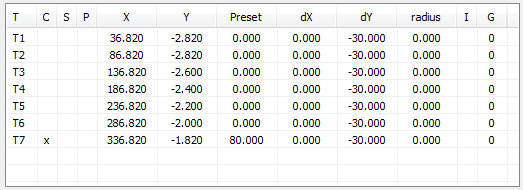
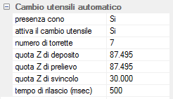

Nell’albero delle Funzioni, fare doppio clic su “Gruppo mandrino”;
fare doppio clic su “Cambio utensili automatico”;

la finestra di dialogo riassume i dati per il cambio automatico degli utensili.
Il magazzino è suddiviso in “torrette”, ognuna capace di contenere un cono portautensile. Le torrette sono individuate da sinistra a destra dai codici T1,T2,…, T10.
Per ogni torretta, sono memorizzate le informazioni di:
torretta corrente C: indica se il cono montato sul mandrino appartiene a questa torretta;
torretta selezionata S: indica che una successiva operazione di cambio utensile preleverà il cono di questa torretta;
presenza cono nella torretta P: indica se nella torretta è presente un cono;
posizione XY della torretta: posizione assoluta della torretta. Tali informazioni sono di norma fornite dal costruttore.
preset: posizione Z=0 (di solito calcolato da un preset automatico); può essere modificata dallo spessore del materiale H.
distanza XY di svincolo: distanza relativa alla posizione XY della torretta per il corretto inserimento ed estrazione del cono;
raggio utensile: raggio dell’utensile alloggiato nella torretta. E’ utilizzato nel controllo delle velocità di avanzamento degli assi;
integrità utensile I: indica che l’utensile non è più utilizzabile;
utensile gemello G: indica quale utensile deve essere usato in alternativa.

indica la presenza del cono montato sul mandrino
sospende l'uso del cambio utensile
numero di torrette nel magazzino utensili
quota Z per il deposito del cono
quota Z per il prelievo del cono
quota Z di svincolo
tempo di aggancio/sgancio del cono in millisecondi
Importante
l’esecuzione del comando M6 comporta il calcolo della quota Z=0 del pezzo:
se il cambio utensile è abilitato, Zo = preset – lo spessore del materiale H;
se il cambio utensile non è abilitato, Zo = Z iniziale – lo spessore del materiale H;